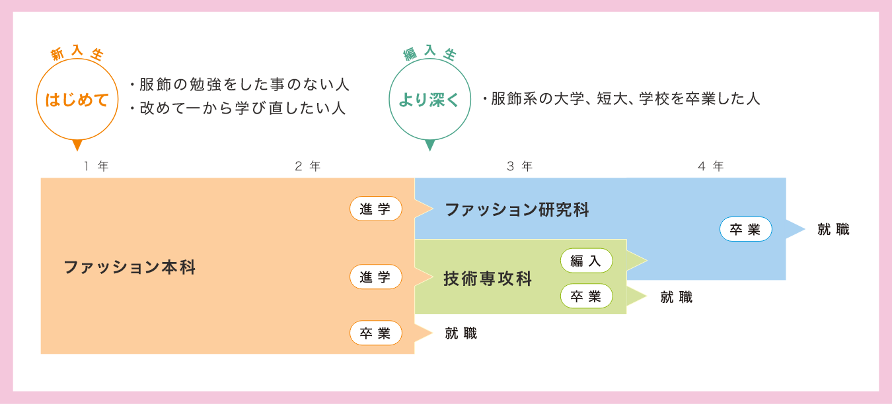

Course
学科案内
学 科
3つの学科をご用意しています。ご自身のペースで学べますのでご安心ください。
また、社会人や主婦の方にも人気のカルチャーコースもございます。
学科案内
本学院では、より質の高い指導と十分な理解促進を図るため、ファッションについての知識や技術修得度によって、入学対象者を大きく二つに分けています。はじめて学ぶ方には基本学科である『ファッション本科』、すでに基礎を修得している方には応用学科である『技術専攻科』・『ファッション研究科』の２つがあります。

入学から進学・卒業・就職までのイメージ
取得を目指す主な資格
- ：ファッション本科
- ：技術専攻科
- ：ファッション研究科
洋裁技術認定試験
日本ファッション振興協会が認定した学校の学生のみが受験できます。筆記試験で「初級」「中級」「上級」の順にレベル段階を上げ、学院で学んだ能力を証明する事を目的としています。
ファッション販売能力検定
ファッションアドバイザーを目指す人に適した検定です。販売知識、マーケティング知識、店舗経営管理、ファッション販売技術、店舗演出、ビジュアル展開、ファッション商品知識などで構成されます。
ファッション色彩能力検定
受験資格に制限はなく、希望する級を受験できます。ファッションの仕事に色彩は欠かせませんのでファッションの仕事を目指す幅広い層の人々に有用な検定です。
ファッションビジネス能力検定
「ファッションビジネス知識」と「ファッション造形知識」の筆記試験２科目で構成されます。受験資格や受験する級に制限はありませんが、学生の場合主に２級または３級の合格を目指します。
パターンメーキング技術検定
１次試験の筆記試験（理論・製図）に合格した後、２次試験（実技試験）にチャレンジする２段階式の検定試験です。学生の場合主に２級、３級の合格を目指して勉強します。
MOVIE